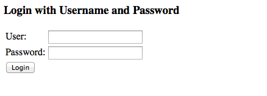
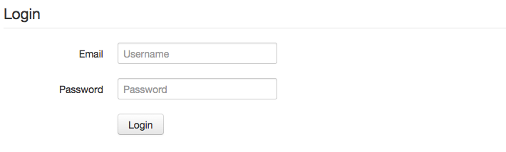

Spring Security
Spring Security
Introduction
La sécurité pour une application se divise en 2 phases :
- Authentification : identification de l'utilisateur
- Autorisation : vérification des permissions
Durant l'authentification, on prend les données fournies par l'utilisateur (login/pass, token...) et on tente de le charger à partir d'un espace d'utilisateurs (realm).
Ces mécaniques sont assez simple à mettre en place initialement mais évoluent assez mal.
Spring security offre une solution indépendante de spring mvc.
Nomenclature
- Principal : entité réprésentant l'utilisateur et qui est chargée lors du processus d'authentification
- Authority : un rôle donné à un Principal
Le contrôle des accès se base donc sur les authorities.
Branche git
On crée la branche aop à partir de la branche master.
> git checkout master Switched to branch 'master' > git checkout -b security Switched to a new branch 'security'
Dépendances
Spring security repose sur spring mais peut fonctionner sans spring mvc.
Les dépendances :
<dependency>
<groupId>org.springframework.security</groupId>
<artifactId>spring-security-core</artifactId>
<version>3.1.2.RELEASE</version>
<scope>compile</scope>
</dependency>
<dependency>
<groupId>org.springframework.security</groupId>
<artifactId>spring-security-config</artifactId>
<version>3.1.2.RELEASE</version>
<scope>compile</scope>
</dependency>
<dependency>
<groupId>org.springframework.security</groupId>
<artifactId>spring-security-web</artifactId>
<version>3.1.2.RELEASE</version>
<scope>compile</scope>
</dependency>
La configuration
La configuration se fait via un contexte spring que l'on configure dans le web.xml.
<!-- Chargement des contextes spring -->
<listener>
<listener-class>org.springframework.web.context.ContextLoaderListener</listener-class>
</listener>
<context-param>
<param-name>contextConfigLocation</param-name>
<param-value>/WEB-INF/spring-security.xml</param-value>
</context-param>
<!-- Filtre Spring Security -->
<filter>
<filter-name>springSecurityFilterChain</filter-name>
<filter-class>org.springframework.web.filter.DelegatingFilterProxy</filter-class>
</filter>
<filter-mapping>
<filter-name>springSecurityFilterChain</filter-name>
<url-pattern>/*</url-pattern>
</filter-mapping>
Afin de sécuriser l'application, un filtre intercepte toutes les requêtes.
La configuration spring-security.xml :
<beans:beans xmlns="http://www.springframework.org/schema/security"
xmlns:beans="http://www.springframework.org/schema/beans"
xmlns:xsi="http://www.w3.org/2001/XMLSchema-instance"
xsi:schemaLocation="http://www.springframework.org/schema/beans
http://www.springframework.org/schema/beans/spring-beans-3.0.xsd
http://www.springframework.org/schema/security
http://www.springframework.org/schema/security/spring-security-3.1.xsd">
<http>
<intercept-url pattern="/**" access="ROLE_USER" />
<form-login />
<logout />
</http>
<authentication-manager>
<authentication-provider>
<user-service>
<user name="test" password="user" authorities="ROLE_USER" />
</user-service>
</authentication-provider>
</authentication-manager>
</beans:beans>
Le filtre s'assure donc que l'utilsateur est authentifié et a le ROLE_USER.
Pour nos tests, on configure un authentication manager avec un utiliseur en dur.
Si on accède à n'importe quelle page du site, on a donc le formulaire :
Les fichiers statiques
Les images, css et js ne doivent pas être sécurisé : nous allons en avoir besoin sans être connecté.
Pour y accéder sans login, il suffit d'écrire une règle http supplémentaire.
<http pattern="/css/**" security="none"/> <http pattern="/img/**" security="none"/> <http pattern="/js/**" security="none"/> <http pattern="/favicon.ico" security="none"/>
Logout
Un fois connecté, il faudrait pouvoir faire l'opération inverse.
L'url par défaut pour se déconnecter est /j_spring_security_logout, ce qui est assez vilain.
On change donc cette url :
<http>
<intercept-url pattern="/**" access="ROLE_USER" />
<form-login />
<logout logout-url="/logout" />
</http>
On peut donc ajouter ce bloc a notre colonne de droite :
<div>
<legend>Test user</legend>
<a href="/logout">Logout <i class="icon-off"></i></a>
</div>
Il est maintenant possible de se connecter / déconnecter simplement.
Le formulaire
Il reste que le formulaire est moche.
Si on regarde le source de ce formulaire généré :
<html><head><title>Login Page</title></head><body onload='document.f.j_username.focus();'>
<h3>Login with Username and Password</h3><form name='f' action='/j_spring_security_check' method='POST'>
<table>
<tr><td>User:</td><td><input type='text' name='j_username' value=''></td></tr>
<tr><td>Password:</td><td><input type='password' name='j_password'/></td></tr>
<tr><td colspan='2'><input name="submit" type="submit" value="Login"/></td></tr>
</table>
</form></body></html>
Il est donc possible de faire la même chose avec notre propre html :
- Il faut faire un POST sur /j_spring_security_check
- Les paramètres importants sont j_username et j_password
On créer donc le fichier /WEB-INF/jsp/login.jsp à partir du fragment html suivant :
<form class="form-horizontal">
<div class="control-group">
<label class="control-label" for="username">Email</label>
<div class="controls">
<input type="text" id="username" placeholder="Username">
</div>
</div>
<div class="control-group">
<label class="control-label" for="password">Password</label>
<div class="controls">
<input type="password" id="password" placeholder="Password">
</div>
</div>
<div class="control-group">
<div class="controls">
<button type="submit" class="btn">Login</button>
</div>
</div>
</form>
Avec un mapping correspondant.
@RequestMapping("/login")
public String login() {
return "login";
}
Il reste donc la configuration à changer :
<http pattern="/login" security="none"/>
<http>
<intercept-url pattern="/**" access="ROLE_USER" />
<form-login login-page="/login" />
<logout logout-url="/logout" />
</http>
Ce qui donne un formulaire un peu plus au goût de notre site.
Custom tags
Nous voulons afficher le vrai nom de l'utilisateur loggué à la place de "Test user"
Spring security propose une librairie de tags qui va permettre de faire cela simplement.
<dependency>
<groupId>org.springframework.security</groupId>
<artifactId>spring-security-taglibs</artifactId>
<version>3.1.2.RELEASE</version>
<scope>compile</scope>
</dependency>
Et dans la jsp
<%@ taglib prefix="sec" uri="http://www.springframework.org/security/tags" %>
<div>
<legend><sec:authentication property="principal.username" /></legend>
<a href="/logout">Logout <i class="icon-off"></i></a>
</div>
Sécuriser l'édition
Utiliser spring security pour :
- Sécuriser uniquement la partie liée à l'édition
- Afficher le lien logout que si la personne est logguée
Vers la base de données
Spring security est extrêmement flexible afin de s'adapter à toutes les situations.
Il y a beaucoup d'implémentation de base pour beaucoup de système : jdbc, ldap, radius, kerberos, oauth...
Il est assez simple de coder une extension à partir du moment ou on sait à quel niveau injecter le code.
Afin d'explorer une possibilité, nous allons échanger notre user service conteu un service jdbc.
Afin d'aller chercher nos utilisateurs en base, il suffit d'écrire.
<authentication-manager>
<authentication-provider>
<jdbc-user-service data-source-ref="dataSource" />
</authentication-provider>
</authentication-manager>
<beans:bean id="dataSource" class="org.apache.commons.dbcp.BasicDataSource" destroy-method="close">
<beans:property name="driverClassName" value="org.apache.derby.jdbc.EmbeddedDriver"/>
<beans:property name="url" value="jdbc:derby:target/taskdb;create=true"/>
<beans:property name="username" value=""/>
<beans:property name="password" value=""/>
</beans:bean>
Dans un vrai projet, il faudrait probablement factoriser les 2 datasources (spring-security.xml et spring-servlet.xml).
En l'état, la base étant vide, on ne peut plus se connecter.
jdbc-user-service utilise la classe JdbcDaoImpl.
Le schema associé est le suivant :
- table users : username, password et enabled
- table authorities : username, authority
Il suffit donc de créer ces tables et de rajouter un utilisateur.
@PostConstruct
public void initUsers() throws SQLException {
Connection connection = dataSource.getConnection();
try {
// create table users if missing
if (!tableExists("users")) {
connection.prepareStatement(
"create table users (username varchar(50), password varchar(50), enabled boolean)").execute();
}
// create table authorities if missing
if (!tableExists("authorities")) {
connection.prepareStatement(
"create table authorities (username varchar(50), authority varchar(50))").execute();
}
// fill tables with test data
connection.prepareStatement("delete from authorities").execute();
connection.prepareStatement("delete from users").execute();
connection.prepareStatement(
"insert into users (username, password, enabled) values ('test', 'user', true)").execute();
connection.prepareStatement(
"insert into authorities (username, authority) values ('test', 'ROLE_USER')").execute();
} finally {
connection.close();
}
}
private boolean tableExists(String name) throws SQLException {
Connection connection = dataSource.getConnection();
try {
DatabaseMetaData dbmd = connection.getMetaData();
ResultSet rs = dbmd.getTables(null, "APP", name.toUpperCase(), null);
return rs.next();
} finally {
connection.close();
}
}
Cela fonctionne même si le code mis en place est loin d'être satisfaisant. Ce code ne pourrait bien sûr pas aller en production.
Pour plus de flexibilité, il vaudrait mieux coder notre propre implémentation de UserDetailsService en utilisant des entités hibernate.